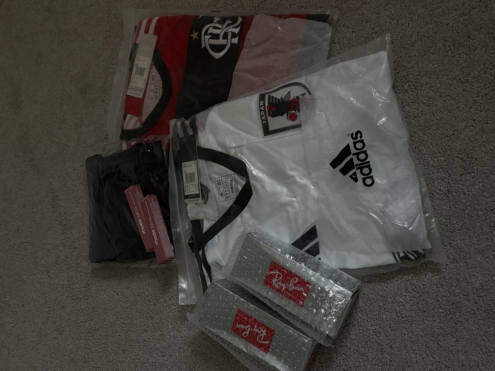
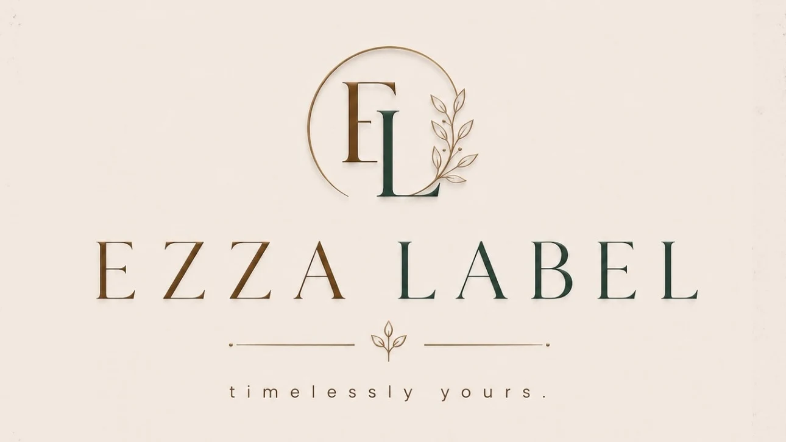
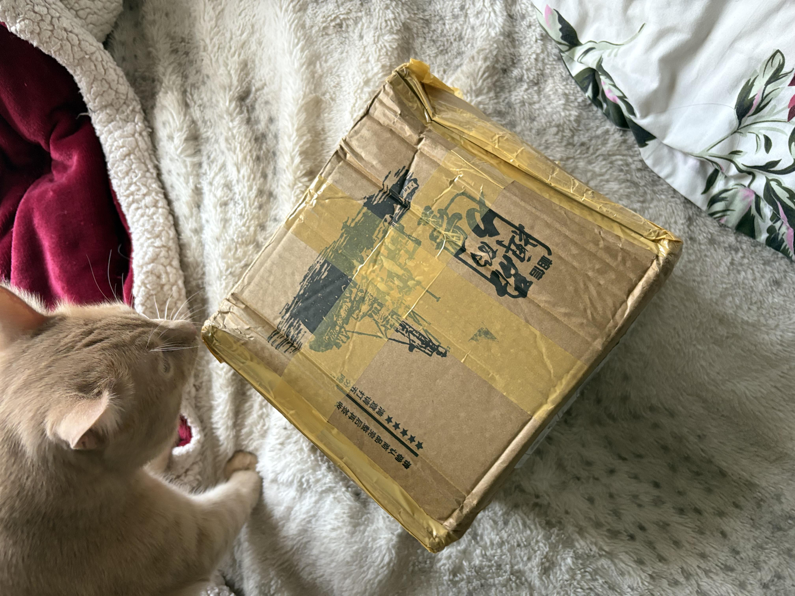
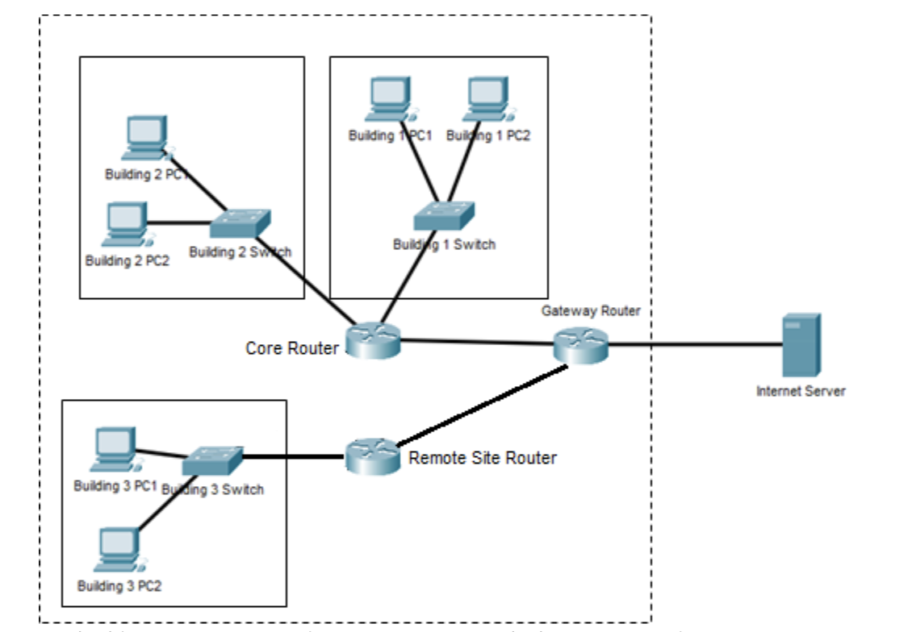

Business Projects
-
My Reselling Business

I started a no-brand reselling business where I buy products in bulk and resell them to customers. This experience helped me develop skills in sales, communication, and managing a small business.
-
Ezza Label

Ezza Label is my fashion and clothing brand focused on printed jersey hijabs. I launched the business in September 2026 and have gained experience in branding, marketing, and customer service.
-
NFC Google Review and Menu Business

This project involves creating NFC products that can help businesses make it easier for customers to access Google reviews and digital menus. It allowed me to explore technology while developing a business idea.
Technology Projects
-
Smart Campus Parking System
This project was created using object-oriented programming in Python. It simulated a university parking system where students, staff, and visitors could register vehicles, park vehicles, pay fees, and receive violations.
-
Corporate Network Design Project

This project involved designing a network for a corporate environment. It helped me understand networking concepts and how different devices and systems can be connected together.